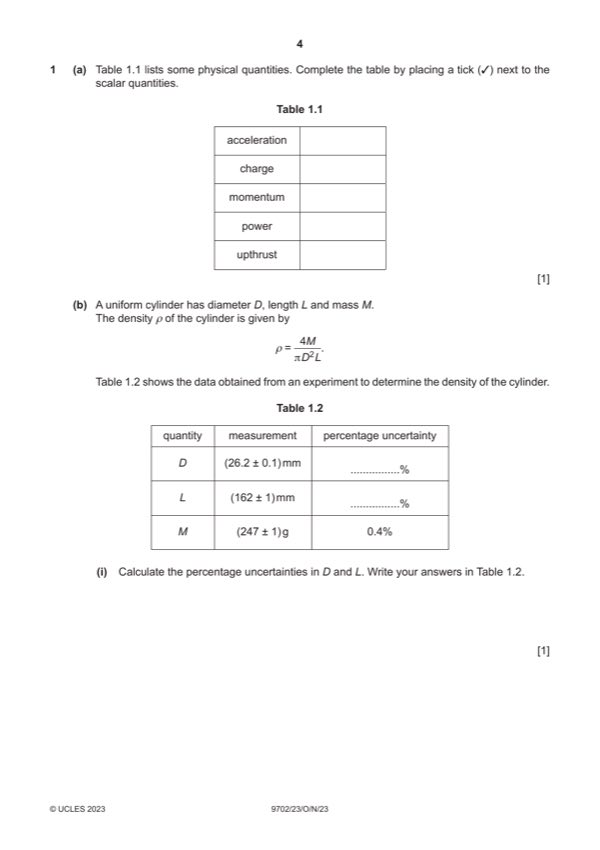

Question 1

Original paper page 4
Part 1(a) — solution
- [B1] Obtain/use: charge and power only ticked
Mark points
- [B1] Obtain/use: charge and power only ticked
Part 1(b)(i) — solution
- [A1] Obtain/use: %D = 0.4% and %L = 0.6%
Mark points
- [A1] Obtain/use: %D = 0.4% and %L = 0.6%
Part 1(b)(ii) — solution
- [A1] Obtain/use: = 2.83 103 kg m–3
Mark points
- [A1] Obtain/use: = 2.83 103 kg m–3
Part 1(b)(iii) — solution
- [A1] Obtain/use: = 1.8%
Mark points
- [A1] Obtain/use: = 1.8%